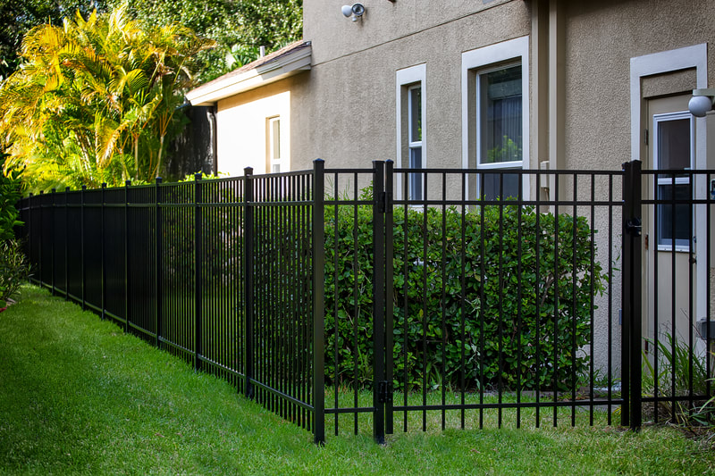
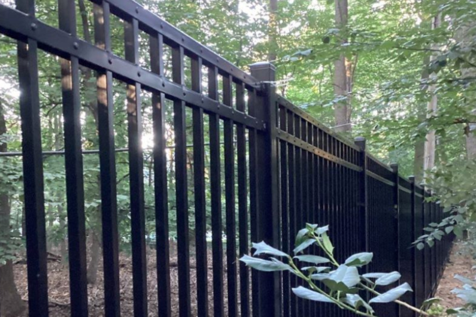
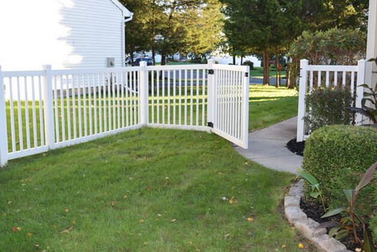

Fargo, North Dakota
Fence company in Fargo, ND
Wood, vinyl, aluminum, chain-link, and farm fencing for houses, acreage, and commercial lots. New lines, replacements, repairs, and gates are quoted from the property.
- Homes, farms, and commercial lots
- Posts set for lake-plain clay and frost
- Free on-site estimates
Get a free quote
Tell us the town, the fence type, and roughly how much line you need.
Materials and work
Fence services in Fargo
Start with the job. A front-yard picket, a backyard screen, a dog run, and a pasture line are not the same fence.

Aluminum fencing
Open aluminum for front yards, pools, and lines you do not want to paint. It stays straight through freeze-thaw better than bare steel.
View service
Vinyl fencing
Privacy and picket vinyl for a straight line without a yearly stain. A practical fit for long winters and hot summers on the prairie.
View service
Wood fencing
Privacy, picket, and horizontal wood you can stain to the house. Posts are set in concrete for clay that heaves when it freezes.
View service
Metal fencing
Steel and ornamental metal when the line needs more weight than aluminum. The spec follows the wind and the opening, not a catalog photo.
View service
Farm fencing
Rail, woven wire, and pipe for livestock and acreage around Cass County. Built for animals and open ground, not a backyard panel.
View service
Picket fencing
Short wood or vinyl picket for front yards that have to stay open. It marks the lot without blocking the sight line the city requires.
View service
Privacy fencing
Solid wood or vinyl screens for side yards and backyards. The height follows the rule for that yard, not the tallest panel in a brochure.
View service
Chain-link fencing
Galvanized and coated chain link for yards, dogs, and work lots. A slat or screen can be added where you need a visual break.
View service
Gates
Walk gates and drive gates hung on posts sized for the leaf. Repair covers hinges, latches, and gates that drag on the ground.
View service
Commercial fencing
Heavier chain link, screens, and vehicle gates for yards and job sites. Built to the site’s use, not to a residential panel.
View service
Fence repair
Leaning posts, split rails, and gates that no longer latch. We repair the failed stretch when the rest of the line is still sound.
View serviceStyles
Fences we install
Privacy, vinyl, chain link, aluminum, and rail from the crew that walks the line in Fargo and Cass County.
Houses
Backyard privacy, pet runs, and property-line replacements. In Fargo a solid front-yard fence stops at 3 feet, and an open fence may go to 4 feet. The taller wood or vinyl line belongs on the side and rear. West Fargo’s front-yard numbers are shorter. We use the city the lot is in.
Privacy fencingLots and acreage
A storage yard needs heavier chain link and a vehicle gate. A pasture toward Casselton or Harwood needs rail or wire sized for the animals, not a backyard panel. Tell us how the ground is used and we will spec the line for that use.
Farm fencingHow a fence job is quoted
- 1Name the job. Screen a yard, contain animals, mark a frontage, or secure a lot. That choice picks the material faster than a photo.
- 2Walk the ground. This valley is flat, but the clay holds water and frost heave is the usual failure. Ditches, corners, and a long carry from the truck change the labor.
- 3Count the openings. A fence with the wrong gate is a daily problem. Walk gates and drive gates are priced as their own pieces.
- 4Repair or replace. Sound posts can take new panels. Posts that heaved over the winter cannot. We say which one you have.
Repairs and gates
Leaning posts, split rails, and gates that no longer latch are a large share of the calls after the ground thaws. If the rest of the line is sound, we repair the failed section.
Gates are hung on posts sized for the opening. A walk gate and a drive gate are different builds, and an opener is not a patch for a post that moved.
Fence repairService area
We work in Fargo and nearby communities, roughly a 25-mile drive, including the Minnesota side of the river. Each city writes its own fence rules. The clay does not change at the city limit.
Questions before you call
How much does a fence cost in Fargo, ND?
The price follows the line we measure: length, height, material, gates, and whether an old fence comes out. Digging deep post holes in wet lake clay, a long carry from the driveway, and a gate that has to clear a mower all move the number. We do not publish a per-foot menu. The estimate comes from the property.
Can you set fence posts in Red River Valley clay so they do not heave?
Yes. Fargo sits on lake-plain clay that holds water, and winter frost goes several feet down. A post set at a depth that works in a southern city will jack out of this ground. We set posts in concrete deep enough for the lot and crown the mix so meltwater does not sit against the post. If a hole is still full of water, we say so before we pour it.
Do you offer wood, vinyl, aluminum, chain link, metal, and farm fencing?
Yes. Wood and vinyl cover privacy and picket work. Aluminum and heavier ornamental metal cover open lines. Chain link covers yards, dogs, and commercial perimeters. Farm fencing covers rail, wire, and pipe for animals on larger parcels. Repair and gates are part of the same call.
Do I need a permit to put up a fence in Fargo?
The city’s inspections FAQ says a permit is not required unless the fence is more than 6½ feet. The residential fence handout says a permit is required when a fence exceeds 8½ feet. Those two pages do not match, so confirm with Inspections before you build over 6½ feet. Height limits still apply either way: 3 feet solid in a front yard, 4 feet if the fence is at least 75 percent open, and 6½ feet on the side and rear. Horace requires a fence permit. West Fargo uses a different height chart.
Can you repair a fence that leaned over the winter, or does the whole line have to come out?
If the posts are still sound, we repair the section that failed and leave the rest. If the posts have heaved or rotted at the ground, new boards on those posts will lean again, and that stretch should be reset. Spring thaw is when this shows up. We will tell you which one you have after we see the line.
Ready to walk the line?
Call (701) 394-8468 or send the town, the fence type, and roughly how much line you need.